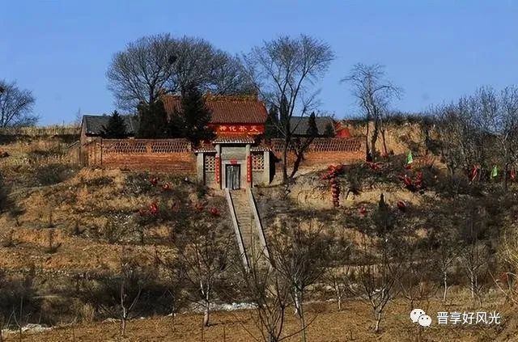
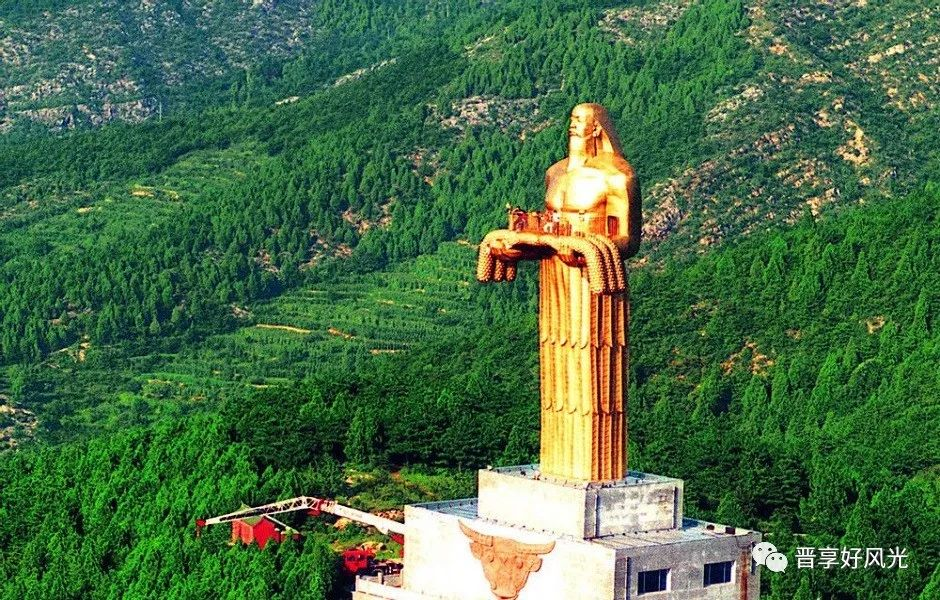
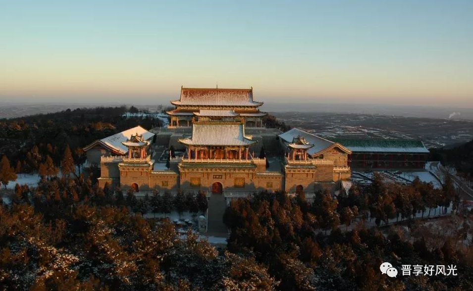

山西神奇的传说故事，隐藏在这些美景中
自古至今山西一直是一个底蕴深厚的城市，古时候人们因为它的地理位置总愿意在这样厚土上留下印记，而现在人们为了追忆过去，流传着美丽神话传说。山西这些景点也因为这些神话的存在也有了许多神秘色彩。
长治市天台山——女娲补天
《淮南子》载：“往古之时，四极废，九州裂，天不兼覆，地不周载。于是，女娲炼五色石以补苍天，断鳌足以立四极，苍天补，四极正。”《潞安府志》载：“娲皇庙在西南天台山，相传即炼石补天处，名望儿台。”天台山即今上党区郝家庄乡上郝村的无影堆，相传夏至这一天，不管是旭日东升的早晨，还是烈日炎炎的中午，或是夕阳西照的傍晚，山上任何一个地方都没有阴影。

长治市老顶山——神农尝百草

屯留区老爷山——后羿射日

王屋山——愚公移山
【返回】